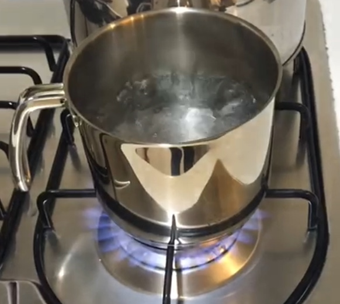
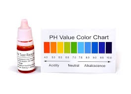
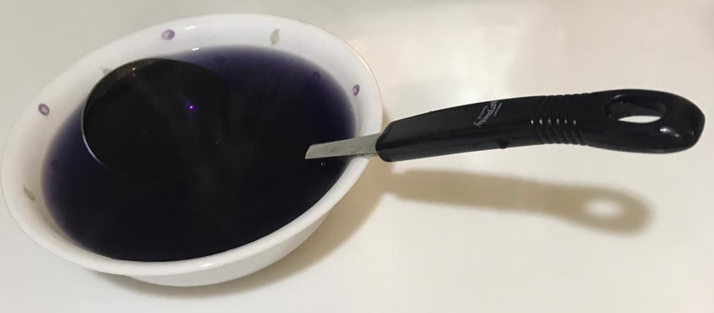

Ng Yu Jie
Mark Leonard
Pang Hai Chet
Azlan
Note: This is just a sample
Date of Submission : 10 May 2019
Ingredients
 |
|
|---|---|
| Red Cabbage | Water |
|  |  |
| Pot | pH Testing Kit |
Process
Done!

Testing and Results
We apply the pH Tester to our solution and compare the color with solutions of known pH.
Acid-Alkali Colors
|
|
References
Health effects of pH on drinking waterThe pH level of water
Written by: Eliana, Michelle, Sheryl, Qi Yuan (DHS 19Y2B)
Last update: 4 May 2019